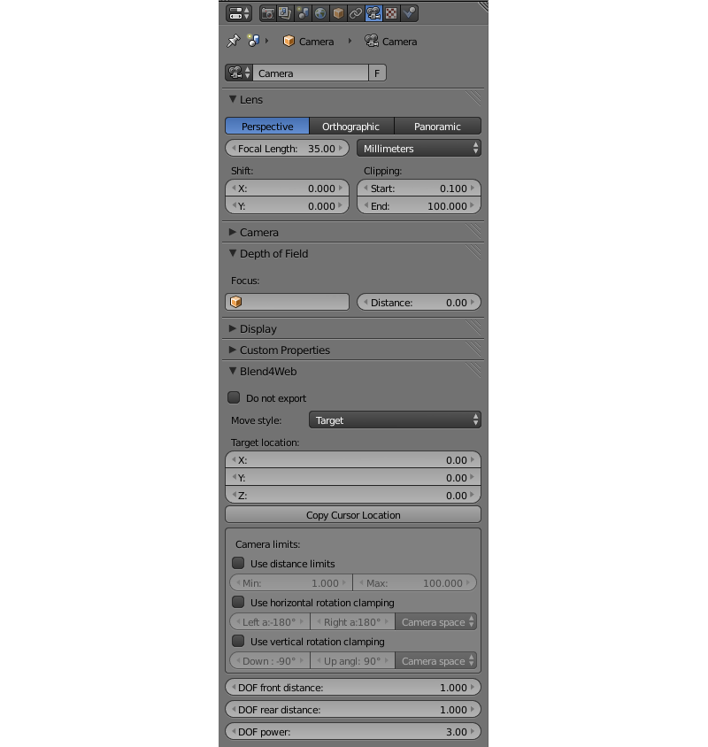

Camera¶
Move Styles and General Settings¶
The camera settings are specified in the Properties panel under the Object Data tab.
{kind=link}
- Blend4Web > Move style
Camera control mode:
- Target
By default the camera is rotating around a fixed point. The pivot’s position can be changed (see camera panning).
- Eye
The Eye mode allows rotation and translation as in first person view.
- Hover
In the Hover mode the camera is gliding over the horizontal plane.
- Static
In the Static mode the camera can be moved via animation or through API calls.
- Blend4Web > Target location
Available for the Target mode. This is the position of the camera pivot point. The Copy Cursor Location button copies the current 3D cursor position into this value.
- Blend4Web > DOF front distance
Described in the Depth of Field section.
- Blend4Web > DOF rear distance
Described in the Depth of Field section.
- Blend4Web > DOF power
Described in the Depth of Field section.
Camera Movement Velocity¶
Velocity settings of different type are available for camera movement.
- Blend4Web > Translation velocity
Available for the Target, Eye and Hover modes. Defines camera translation velocity.
- Blend4Web > Rotation velocity.
Available for the Target, Eye and Hover modes. Defines camera rotation velocity.
- Blend4Web > Zoom velocity
Available for the Target and Hover modes. Defines velocity for approaching the camera to the pivot point.
Default values for the parameters: Translation velocity, Rotation velocity - 1, Zoom velocity - 0.1.
Allowable values for the parameters: Translation velocity, Rotation velocity - \(\left[0,\ \infty \right)\), Zoom velocity - \(\left[0,\ 1\right)\)
Limiting the Camera Movement¶
There are several settings for the camera which limit its movement one way or another. They are grouped as Camera limits.

Types of limits
- Blend4Web > Use distance limits
Available for the Target and Hover modes. In the Target mode these parameters define the minimum and maximum distance from the camera to the pivot point.
Available options for the Target camera:
- Max > Min
Distance from the camera to the object is limited by the interval [Min, Max]
- Max = Min
The camera is fixed on a certain height above the object.
- Max < Min
Unlimited movement.

Default values: Min = 1, Max = 100.
For the Hover camera these parameters define minimum and maximum distances from the camera to the point of intersection between the camera view direction and the horizontal plane (OXY Blender’s world coordinates plane by default).
Available options for the Hover camera:
- Max > Min
Distance from the camera to the pivot is limited by the [Min, Max] range.
- Max = Min
The camera is fixed on the certain distance to the pivot.
- Max < Min
The camera can freely move along the OZ Blender world axis, the pivot is not assigned.
Default values: Min = 1, Max = 100.
- Blend4Web > Use horizontal translation limits
Available in the Hover mode. These settings limit the pivot’s movement by the OX Blender world axis.
Interval variants:
- Max > Min
The pivot’s movement is limited by the [Min, Max] range.
- Max = Min
The pivot’s position is fixed.
- Max < Min
No limits.
Default values are Min = -100, Max = 100.
- Blend4Web > Use vertical translation limits
Available in the Hover mode. These settings limit the pivot’s movement by the OY Blender world axis.
Interval variants:
- Max > Min
The pivot’s movement is limited by the [Min, Max] range.
- Max = Min
The pivot’s position is fixed.
- Max < Min
No limits.
Default values are Min = -100, Max = 100.
- Blend4Web > Camera angle limits
Available in the Hover mode if Blend4Web > Use distance limits option is enabled. These settings limit the camera’s inclination (the angle between camera view direction and the horizontal plane).
Interval variants:
- Max > Min
Camera rotation angle is limited by the [Min, Max] range.
- Max = Min
The camera’s inclination is fixed, the distance from the camera to the pivot is the Min value of the Blend4Web > Use distance limits field.
- Max < Min
The Blend4Web > Use distance limits is not applied.
Allowable values: 0 \(\le\) Min, Max \(\le\) 90.
Default values: Min = 0, Max = 90.
- Blend4Web > Use panning mode
Available in the Target mode. Allows camera panning.
- Blend4Web > Use horizontal rotation
Available in the Hover mode if the Blend4Web > Use distance limits option is enabled. This setting allows the camera’s rotation in the horizontal plane relative to its pivot.
- Blend4Web > Use horizontal rotation clamping
Available in the Target and Eye modes. Limits the camera’s horizontal rotation relative to the pivot point (in the Target mode) or relative to its position (in the Eye mode).
The direction from Left to Right is considered positive and matches the counterclockwise direction for the Target mode, and the clockwise direction for the Eye mode:

Default values: Left = -180, Right = 180.
- Blend4Web > Use vertical rotation clamping
Available in the Target and Eye modes. Limits the camera’s vertical rotation relative to the pivot point (in the Target mode) or relative to its position (in the Eye mode).
The direction from Down to Up is considered positive:

If the Use horizontal rotation clamping checkbox is enabled, vertical rotation will be limited at least to the interval [-90, 90].
Default values: Down = -90, Up = 90.
Possible rotation limits pitfalls
Swapping the Left/Right or Down/Up values swaps the rotations arcs.

Left = Right, Up = Down - fixes the camera horizontally and vertically (respectively).
Rotation angles origin
You can choose the space of coordinates for horizontal and vertical rotation limits:
- Camera space
All angles are measured relative to the initial camera position and orientation.
- World space
Horizontal angles are measured starting from the Y axis in the world space, while vertical angles - relative to the horizontal plane XOY in the world space.
For horizontal limits:

For vertical limits:

The coordinate axes labelled on the pictures match the Blender’s world coordinate axes.
By default the Camera space option is selected.